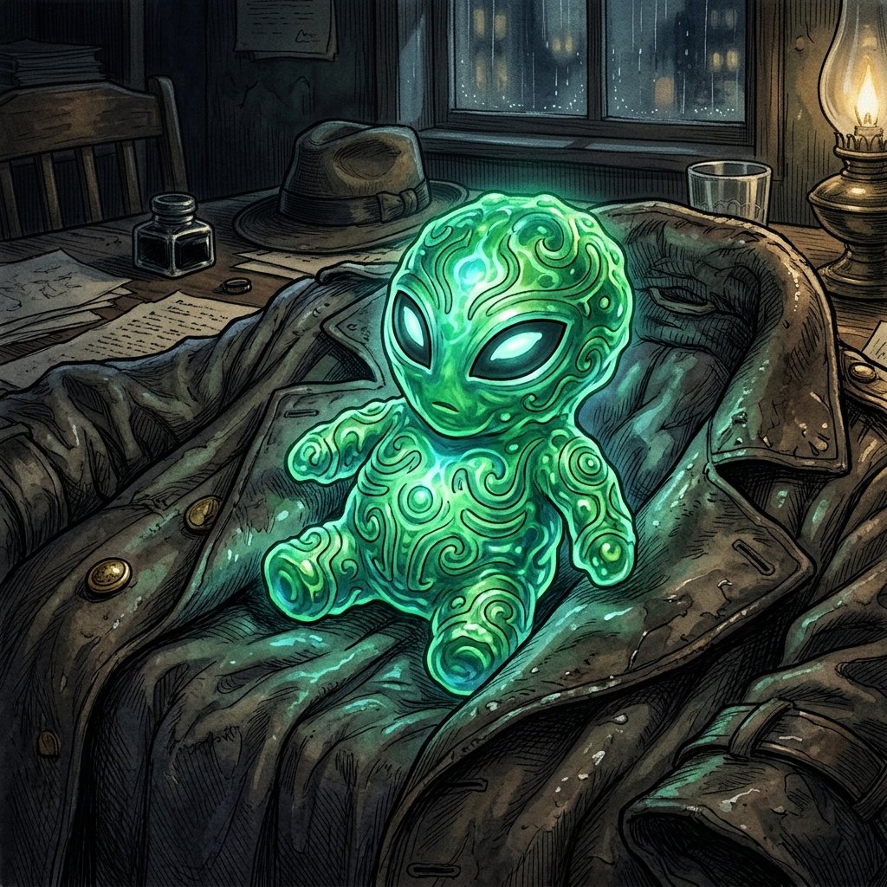
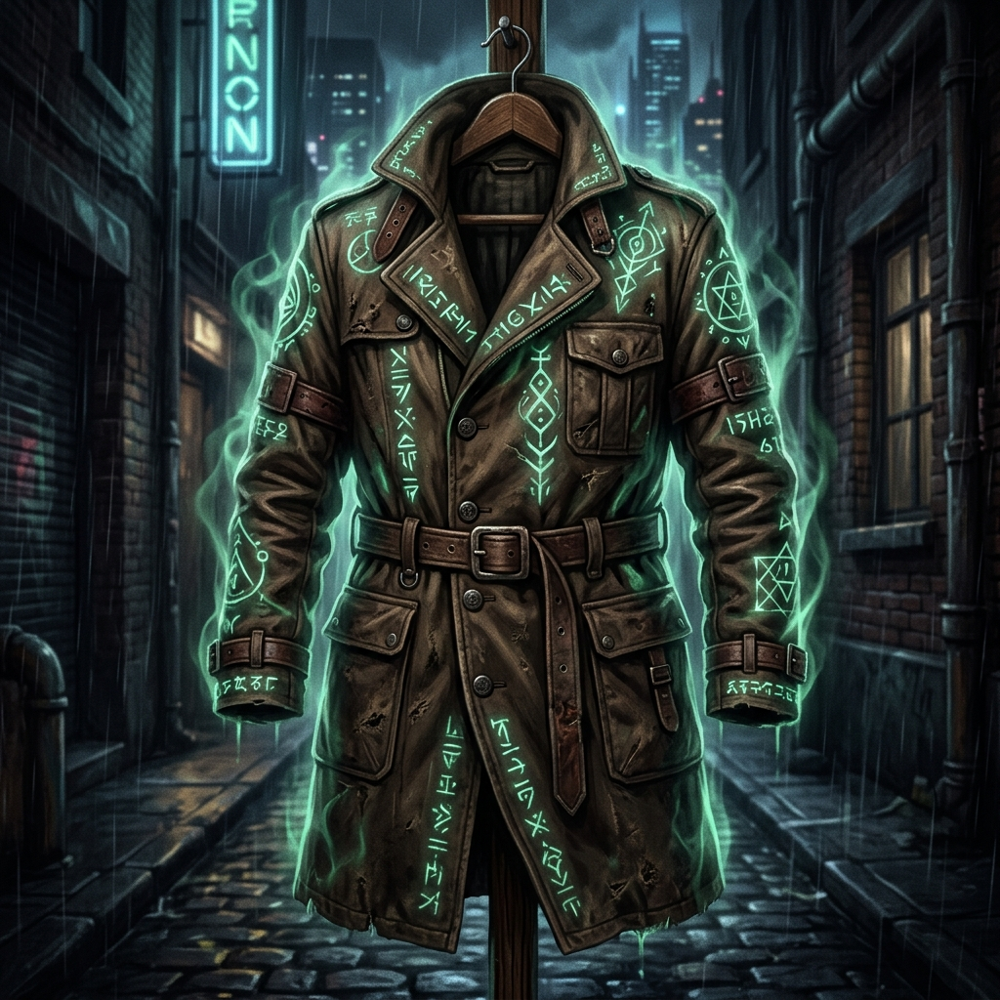
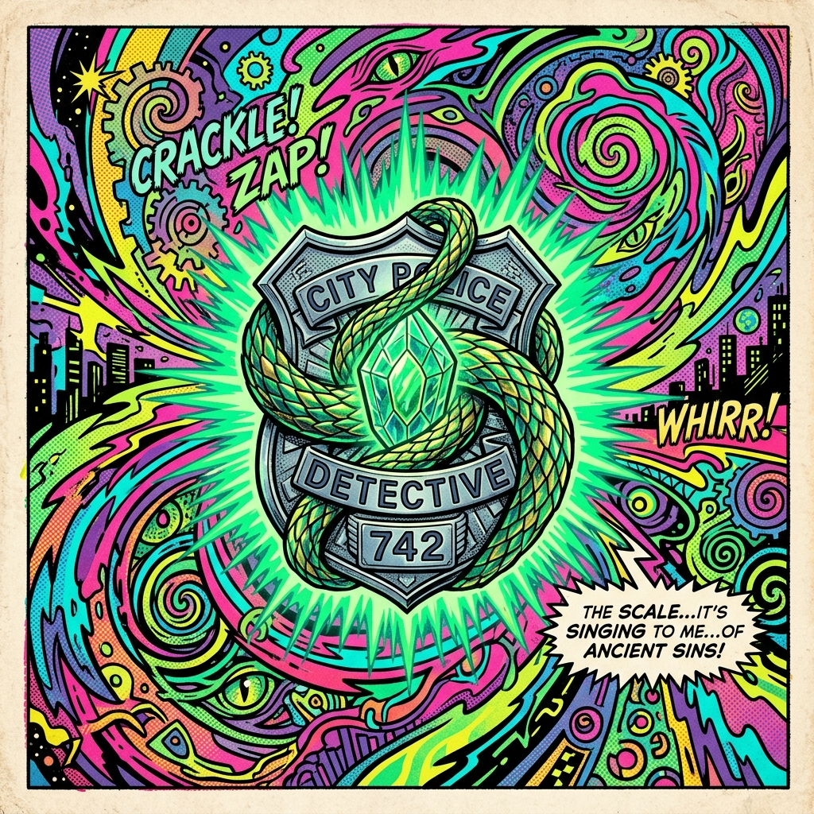
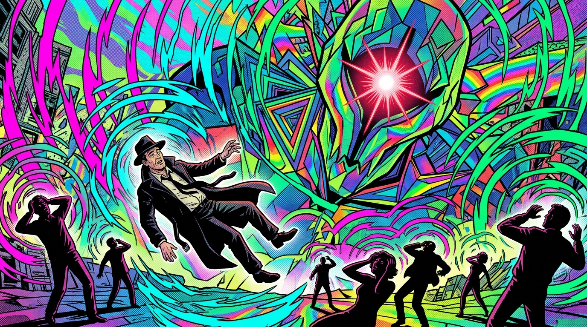

ðŸ›¡ï¸ 1. ESTADÃSTICAS DE COMBATE, DEFENSAS E INMUNIDADES (NIVEL 6)
0 Daño PsÃquico + Te Curas la Mitad
Gracias al Ascendant Scaled Ornament (Dragón Esmeralda), cuando vayas a recibir daño PsÃquico, usas tu Reacción para recibir 0 de daño y curarte PG igual a la mitad del daño que ibas a sufrir. Además, pasivamente tienes Resistencia PsÃquica por tu subclase (Defensas PsÃquicas Nv6).
Inmune a Hechizado y Asustado
Tu mente marciana es inexpugnable: eres 100% Inmune a los estados Hechizado (Charmed) y Asustado (Frightened). Además, proyectas un aura psÃquica a 30 pies que otorga Ventaja en las salvaciones contra ambos estados a todos tus aliados.
Ventaja contra Conjuros y Magia
Por tu Robe of the Archmagi, tienes Ventaja en TODAS las tiradas de salvación contra conjuros y otros efectos mágicos. Tu CA base es 16 + DES (18) y sube a 23 con Escudo.
Vuelo Hover 30ft + Teleport 15ft
Vuelas a 30 pies con Levitación (Hover) permanente. Cada vez que lanzas un conjuro de Nv 1+, te teletransportas 15 pies gratis. Si recibes daño de Ãcido, FrÃo, Fuego, Rayo o Trueno, usas Absorber Elementos para reducirlo a la mitad.
Ingresa el daño psÃquico del ataque enemigo para anularlo a 0 y curarte la mitad:
💎 2. TU TRÃO LEGENDARIO (ARTE Y REGLAS COMPLETAS)

SINTONIZACIÓN #1 · FTD p.26Ascendant Dragon-Touched Focus (Gem / Emerald)
5e.tools ↗🟢 Reskin Marciano: El cristal/figurilla de arcilla verde que moldeó su hijo Tyler, oculto en el bolsillo interior de John y despierto con energÃa psiónica de Ma'aleca'andra.
- Ventaja en Iniciativa: Tienes Ventaja permanente en todas tus tiradas de Iniciativa.
- Teletransporte Gema (Stirring): Cada vez que usas un espacio de conjuro (nv 1+), puedes teletransportarte 15 pies gratis inmediatamente a un espacio desocupado que veas.
- Conjuros Despiertos (Wakened · 1/dÃa gratis c/u): Lanzas Raulothim's Psychic Lance (7d6 psÃquico + Incapacitar) y Rary's Telepathic Bond sin gastar slots.
- Poder Ascendente (1/dÃa): Cuando lanzas un conjuro de nivel 1+, puedes tratarlo como si fuera lanzado con un espacio de Nivel 9.

SINTONIZACIÓN #2 · XDMGRobe of the Archmagi
5e.tools ↗🟢 Reskin Marciano: La gabardina negra de detective de John, tejida con la densidad dimensional del Marciano. Bajo luz ultravioleta o psÃquica, el forro interior brilla como una nebulosa verde.
- Armadura Base Superior: Si no llevas armadura, tu CA base pasa a ser 15 + tu modificador de Destreza (+2) = 17 (que sube a 18 con el Ornamento).
- Amplificador de Frecuencia (+2 CD y Ataque): Tu CD de salvación de conjuros y tu bonificador de ataque de conjuros aumentan en +2 (llevando tu CD a 18 pasiva / 19 con HechicerÃa Innata y tu ataque a +10).
- Resistencia Mágica: Tienes Ventaja en todas las tiradas de salvación contra conjuros y otros efectos mágicos.

SINTONIZACIÓN #3 · FTD p.27Ascendant Scaled Ornament (Emerald Dragon)
5e.tools ↗🟢 Reskin Marciano: La Placa de Detective del FBI (#742) de John fusionada con la escama esmeralda del Marciano. Late al ritmo de las ondas cerebrales a su alrededor.
- +1 a la Clase de Armadura: Se apila con tu Túnica del Archimago para darte CA 16 + DES = 18 (y CA 23 con Escudo).
- Levitación Clásica Marciana: Ganas velocidad de Vuelo de 30 pies y puedes flotar (Hover) permanentemente.
- Inmunidad Mental + Aura: Eres Inmune a Hechizado y Asustado, y cada criatura de tu elección a 30 pies tiene Ventaja en salvaciones contra esos estados.
- Absorción PsÃquica (Reacción): Cuando sufras daño PsÃquico, usas tu Reacción para recibir 0 daño y recuperar PG igual a la mitad del daño que ibas a sufrir.

Colapso Sináptico de 8 Enemigos Simultáneos contra CD 19
- Activas HechicerÃa Innata (Acción Adicional $\rightarrow$ tu CD sube a 19).
- Gastas un simple espacio de Nivel 2 para lanzar Látigo Mental de Tasha (o Inmovilizar Persona) y activas la propiedad Ascendente de tu Foco para convertirlo gratis en Nivel 9.
- Resultado: Golpeas el cerebro de 8 enemigos a la vez contra CD 19 (todos sufren 3d6 psÃquico = 24d6 psÃquico total y pierden su turno y reacción, o quedan los 8 paralizados en el acto), y además te teletransportas 15 pies volando a una posición segura.
âš¡ Tus 5 Combos de Metamagia Actualizados a D&D 5.5e
"Tortura Mental Permanente" (Desventaja en TODAS las Salvaciones)
En 5.5e, Conjuro Elevado (Heightened Spell) bajó de 3 a 2 PH e impone Desventaja en TODAS las tiradas de salvación contra el conjuro (no solo en la primera, sino también al final de cada turno). Activas HechicerÃa Innata (CD 19) + lanzas Fuerza Fantasmal (2d8 psÃquico automático por turno), Inmovilizar Persona, Risa Horrible de Tasha o Miedo con Conjuro Elevado. El jefe debe superar CD 19 con Desventaja cada ronda.
"Doble Cortocircuito por 1 Punto" (2 Objetivos + Teleport 15ft)
En 5.5e, Conjuro Gemelo (Twinned Spell) cuesta solo 1 PH y funciona en cualquier conjuro que agregue un objetivo adicional al subir de nivel. Lanzas Látigo Mental de Tasha (Nv 2), Risa Horrible de Tasha (Nv 1) o Inmovilizar Persona (Nv 2) por 1 PH: golpeas el cerebro de dos enemigos con 3d6 psÃquico a cada uno y ambos pierden reacción y turno normal (o paralizas a dos objetivos).
"Francotirador PsÃquico Explosivo" (Ventaja + Dados que Explotan en 8)
Con HechicerÃa Innata activa, lanzas el truco Estallido Hechicero (Sorcerous Burst) eligiendo daño PsÃquico (y puedes gastar 2 PH en Conjuro Acelerado para dispararlo dos veces en el mismo turno). Tiras con Ventaja (+10 al impacto), haces 2d8 de daño psÃquico por impacto y cada 8 que salga en los dados explota y tiras otro d8 adicional (hasta +5d8 extra).
"Asalto Mental Indetectable" (2d6 PsÃquico y -1d4 al Save en el Mismo Turno)
Acción para lanzar Astilla Mental (2d6 psÃquico y -1d4 a su siguiente salvación) + Acción Adicional con Conjuro Acelerado (2 PH) para lanzar Sugestión, Los Enemigos Abundan o Susurros Disonantes. Obligas al enemigo a salvar contra tu CD 18/19 restando -1d4 en ese mismo instante.
"Cero Daño Colateral" (5 Aliados 100% Inmunes a tus Ãreas)
En 5.5e, Conjuro Cuidadoso (Careful Spell) hace que tus 5 aliados (por tu Carisma +5) pasen la salvación automáticamente y además no reciban nada de daño. Lanzas Patrón Hipnótico, Miedo o Brazos de Hadar en medio de tus compañeros por 1 PH sin tocarlos.